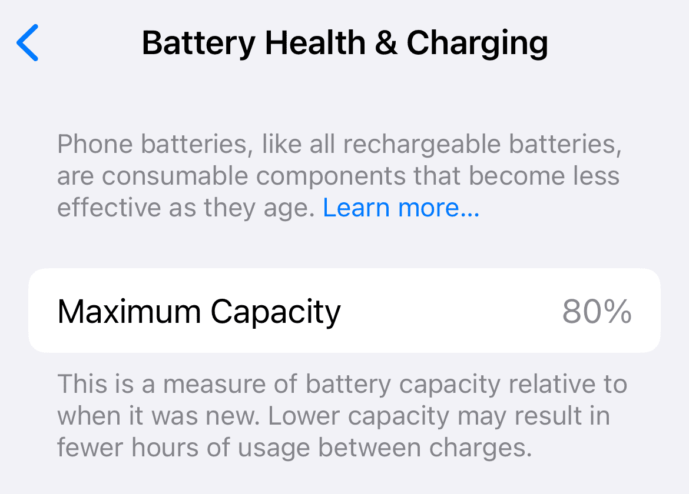

Overview
If you're facing the frustrating "Service" message in your iPhone's battery settings and seeing reduced battery health after battery replacement or repair, you're not alone. Fortunately, there's an easy way to remove that message and improve the battery health reading—without complex hardware work or Apple diagnostics.
In this tutorial video, Zeshan0727 shows you how to fix this issue using a free tool called 3uTools. It’s a simple and effective method to reset the battery health values and remove the warning message from your iPhone’s settings.

How It Works
This video walks you through the step-by-step process of using 3uTools to remove the service message and restore battery health status on iPhones. No need for hardware tools or advanced knowledge—just follow the easy tutorial and get your iPhone back to optimal condition.
Who Is This For?
This guide is ideal for anyone who has recently changed their iPhone battery or purchased a used iPhone showing the "Service" warning—even if the battery is in good shape. It's especially useful for technicians, refurbishers, and iPhone users looking to improve resale value.
Final Thoughts
Don't let a software-generated warning make you doubt your iPhone's battery. With this method, you can easily clean up the service message and bring back a proper battery health reading. Follow the steps in the video, and you're good to go.
← Back to Home